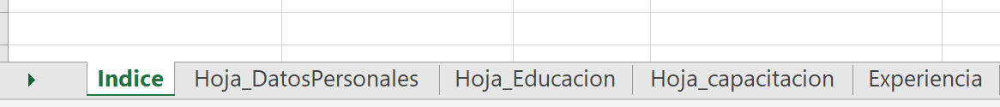
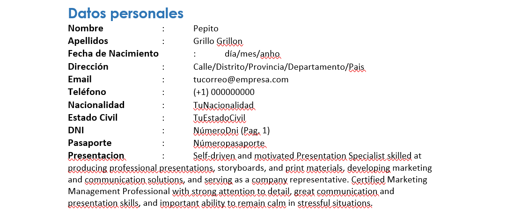

CV documentado con Python
En la mayoria de postulaciones laborales es muy comun que se requiera cv-documentado. Sin embargo, la tarea de organizar toda la documentación puede ser tedioso. Este post, te ayudará a generar un cv documentado de manera automática usando python.

Outline - Excel
El primer paso de este proceso es definir el índice de nuestro cv, para lo cual, una buena alternativa es un documento spreadsheet (“Template_CV.xlsx”). Este documento debe tener tiene que tener la hoja “Índice” (como se muestra en la figura)
esta hoja contiene:
-
Página: Nombre de hoja excel donde estarán organizados los datos
 -
Título: Título de la Sección con el que irá el CV final
-
Orden: Órden en que se listará en el CV final
-
Planilla: Plantilla que se usará para estructurar la sección.
En el caso de la Planilla se tiene 3 alternativas:
- Información_personal

- Título_Anho
- Lista_items (Lista simple del contenido)
Organización documentos pdf
Todos los documentos mencionados en las columnas LinkDocumento del archivo Template_CV.xlsx tienen que estar contenidos en la carpeta pdf_files en formato PDF.
Ejecución
El código consta de 3 archivos python:
- Merge_PDF.py : Genera la compilación de los documentos pdf
- putNumber.py : Coloca número de página a los PDFs
- CV_Maker.py : Archivo principal que genera el *.docx y *.pdf
Para la ejecución se posiciona en la carpeta y ejecutar el comando:
python Merge_PDF.py
Resultado
Una vez ejecutado, se generarán 2 archivos en la carpeta CV_Template_result.docx y CV_Combinado.pdf

CV_Template_result.docx contiene la información del Curriculum mientras CV_Combinado.pdf contiene los documentos ordenado basado en la información de Template_CV.xlsx.
CV_Template_result.docx puede ser alterado a preferencia del usuario, y una vez convertido a pdf, se puede utilizar aplicaciones como PDFsam para combinar los 2 archivos. En caso de no usar el número de página, puede usar el archivo temp.pdf
Código
El código completo se puede encontrar en el siguiente Link
Germain Garcia-Zanabria
Computer Scientist | Data Scientist
My areas of interest are data visualization, visual analytics, machine learning, data science, crime analysis, crime prediction, dropout analysis, geo-referenced data, Spatiotemporal analysis, and computer science for social goods.